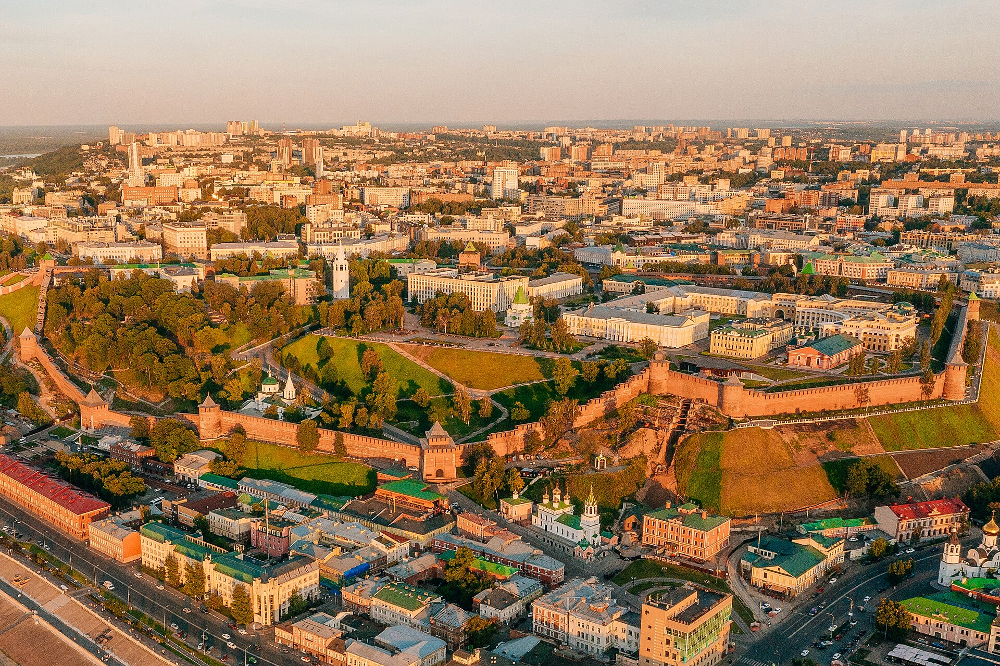
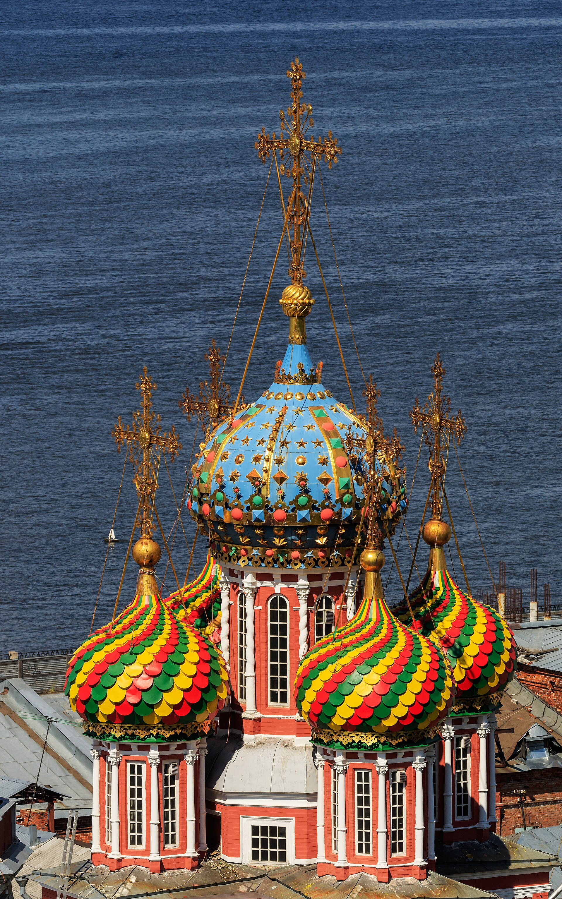
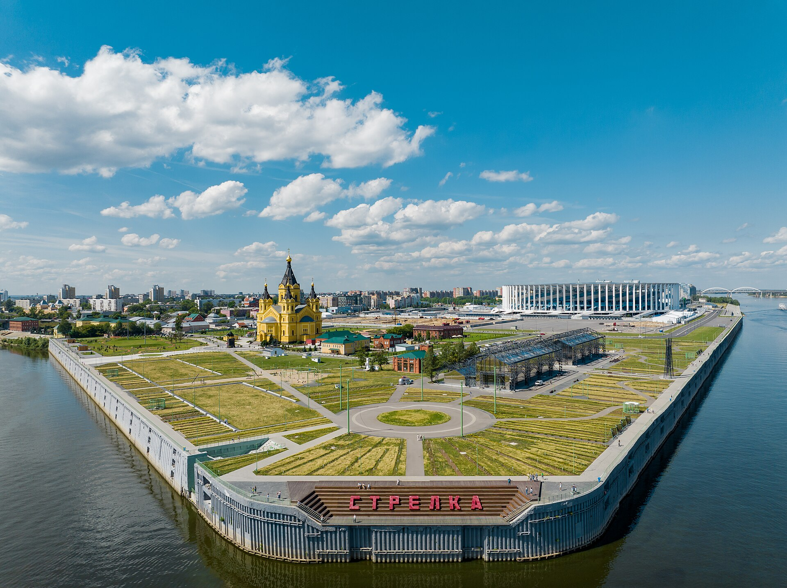
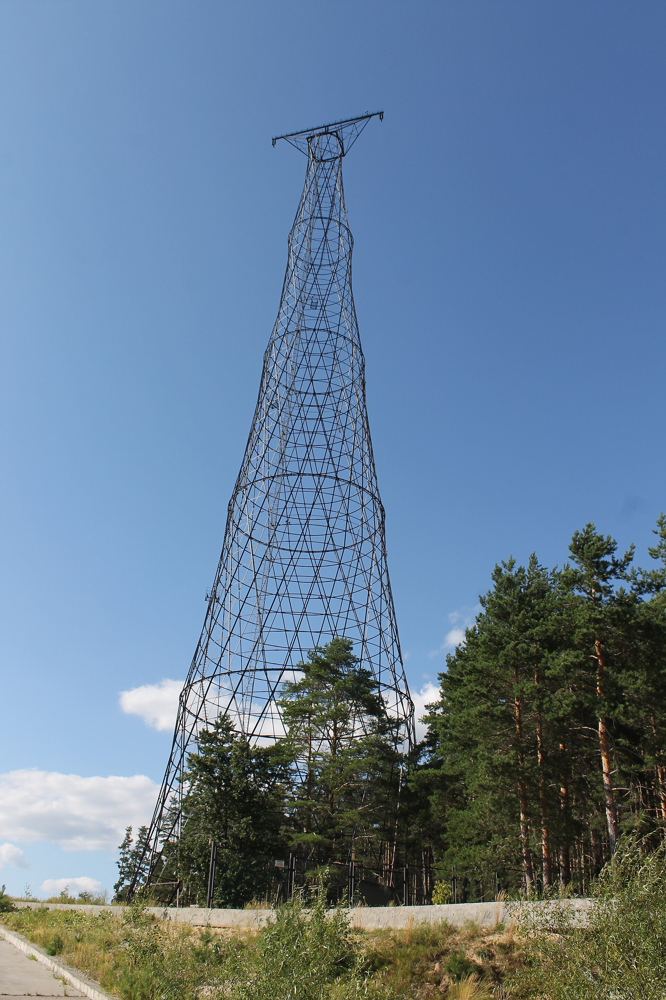

Путеводитель по двум измерениям региона: от симфонических концертов в ажурных Пакгаузах на Стрелке до гиперболоидов Владимира Шухова на Оке и заповедного озера Светлояр.

Нижний Новгород не похож на плоские города равнин. Его верхняя часть парит на стометровых Дятловых горах, а нижний посад тянется вдоль пристаней, где в XIX веке Нижегородская ярмарка диктовала цены на чай и железо от Лондона до Пекина.
Но стоит выехать за пределы города — и купеческое барокко сменяется радикальным инженерным авангардом башен Шухова, индустриальными муралами Выксы и таёжными тропами Керженца.

Переключайте четыре эмоциональных сценария ниже, чтобы увидеть, как городские локации соединяются с поездками в область.
В отличие от базового справочника достопримечательностей, здесь собраны готовые сценарии действия — от выхода под парусом на Стрелке до полёта на «Валдае» в Макарьев.

Главный материал номераОт павильонов Всероссийской выставки 1896 года до 128-метровой сетчатой опоры на берегу Оки и современного «Выкса-фестиваля» — большой маршрут по индустриальному наследию региона.
Перейти к индустриальным экспедициям →Крупнейший в России фестиваль аудиовизуального искусства на исторических объектах города.
Как за один час по Волге добраться из центра Нижнего в Городец, Макарьев или Юрино.
Кулинарная карта главных исторических улиц верхнего и нижнего посада.